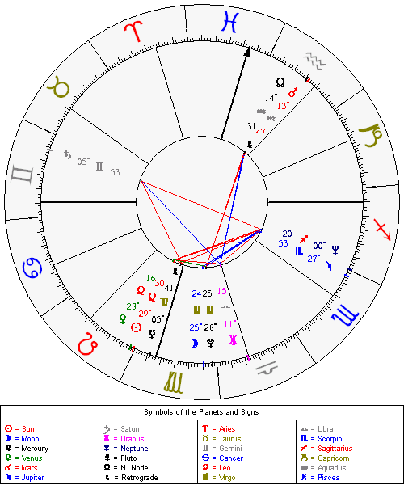

Rising Sign is in 24 Degrees Gemini
Extremely active by nature, you like to get around, meet people and do different things. Very restless, you just can't seem to stay put. You need to be involved in several projects at once in order to keep your mind stimulated. You like to read books and to write letters and to talk -- constantly. Seemingly ageless, you will always appear to be much younger than you really are. Very adaptable and inquisitive, you are always open to new ideas and experiences. A "jack-of-all-trades", you are lively and versatile. Because of the high nervous tension that you always seem to have, athletic activity would be a good way for you to burn off energy. But be careful of a tendency to experience things only superficially -- try to dig in and absorb things at a deeper level.
Sun is in 29 Degrees Leo.
More than a bit of a showoff, you love to be the center of attention! But others do not usually mind because they tend to enjoy your genuine warmth and affection. Very spirited and willful, proud and self-important at times, you demand your own way. You are quite honest, however, and the respect of others is very important to you. You never compromise yourself and you pursue your goals with persistence and dedication. Your regal presence and demeanor draws you to positions of leadership and authority. But beware of being overly hardheaded, domineering, ostentatious or patronizing or you will lose the goodwill and admiration that you enjoy. Very theatrical, you live life on a grand scale wherever and whenever possible. Your strength and energy vitalizes those who come in contact with you.
Moon is in 25 Degrees Virgo.
You tend to be serious-minded but cheerful for the most part. You need tasks that engage both your mind and your hands. A careful worker, you enjoy making things. You are neat and orderly, and are very concerned with good health habits. Fastidious to the extreme, you cannot tolerate messes and will immediately clean them up. Reserved, shy, and very self-critical, you tend to be very hard on yourself. You usually will go out of your way to be helpful and useful to others. Practical, reliable, efficient and conservative, at times you are a bit of a prude. You are known to lead a simple, uncomplicated, frugal, methodical and unemotional lifestyle. You are devoted and caring to those you love.
Mercury is in 05 Degrees Virgo.
Very thorough and efficient, you pay attention to the minor but important details of any project. You are a careful thinker who can learn complicated, intricate techniques. You are attracted to practical, useful skills and are probably good at working with your hands. You are very critical of yourself and others, sometimes too much so, and you get the reputation of being a nag or of being nit-picky. Your first reaction to any situation is to try to organize, classify and analyze everything!
Venus is in 28 Degrees Leo.
You have a striking, regal appearance and demeanor that attracts others to you. Your friendship is highly sought and you tend to take friendships quite seriously -- you remain loyal and true to those to whom you are attached. For you, love is mixed with pride and respect. Relationships are over when you lose respect for your partner. Be careful of a tendency to relate only to those who make you look good -- the powerful, important and influential. This can lead to arrogance and selfishness, and neither of these qualities becomes you.
Mars is in 13 Degrees Aquarius.
Your ideas and opinions are usually inventive and original, but sometimes they are merely eccentric and offbeat. You are altruistic -- you will work hard for the attainment of group goals, as long as they meet your high standards. You tend to resent traditional authority figures because you think that your ideas are better thought out and more valuable than theirs. Very idealistic, you are a rebel WITH a cause!
Jupiter is in 27 Degrees Scorpio.
You love to dig deep beneath surface appearances in order to find out what is really happening. A persistent researcher, you are very interested in the psychology of any situation. You tend to become overwhelmed by the complexity of what you uncover, however, and that makes you a bit gun-shy about explaining things to others. But you must learn to try to communicate as best you can because what you know is really very valuable to others.
Saturn is in 05 Degrees Gemini.
You are such a clear thinker and speaker, with a logical orderly mind, that you are repulsed by abstract, intangible or unorganized thoughts or ideas. But you tend to get uptight about speaking in public because you are afraid to be wrong. Remember that the best way to learn is by making mistakes. Also, you will be so carefully prepared that you probably will not make many mistakes anyway. To be interesting to you, ideas have to be practical and useful.
Uranus is in 11 Degrees Libra.
You, as well as your entire peer group, have a very free, unstable and unconventional approach to relationships and emotional commitments. You will be attracted to experiments in marriage and shared lifestyles. Personal freedom is more important to you than entangling emotional bonds. In the realm of art and aesthetics, you are attracted to the bizarre, shocking and unusual.
Neptune is in 00 Degrees Sagittarius.
You, and your entire generation, are heavily involved in investigating and idealizing foreign and exotic intellectual systems and religious philosophies. The most extreme ideals will be pursued with gusto. You will be at the forefront of humanitarian attempts to improve the lot of those who are in need of assistance. You will be comfortable with the concept of the "global village."
Pluto is in 28 Degrees Virgo.
For your entire generation, this will be a time when profound changes in society's attitude toward work, duty and responsibility will be initiated. Radical changes in attitudes toward personal health and general nutrition will be promulgated and gain wide acceptance and practice.
N. Node is in 14 Degrees Aquarius.
As long as someone else (or a group or organization) appeals to your intellectual sensibilities, you'll try to ally yourself with them in some way. You may find that you always seem to get involved with many wide-ranging groups -- so much so that you find it difficult to fit them all into your busy schedule. Your many friends and acquaintances provide you with needed stimulation. You're loyal and fair-minded -- you try to spend time equally with all your friends, never concentrating on just one or two for any length of time. Although probably quite conservative yourself, you're attracted to those who are a bit offbeat or eccentric -- you enjoy watching their minds work.